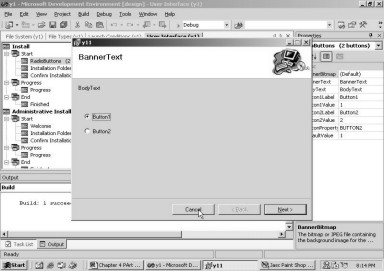

4. Setup and Deployment Projects
Whenever we download any
software from the net for the Windows operating system, it comes crammed in a
single file. This file invariably has the extension of .zip or .exe or .msi, or
.cab, etc. The zip file is a compilation of multiple files, which may or may
not be in a compressed form. It requires an unzip program, one of them called
'Winzip', to extract the files from the zip mode. An exe file is an executable
file, which requires no external program, and can run on its own. However, the
msi file, which contains an installation program, requires a Windows Installer
program.
When a product has to be
installed on the hard disk, the file that initiates the installation program,
either has an 'exe' extension (for e.g. setup.exe) or a msi extension. This
program brings forth a wizard, where relevant information has to be entered,
for successful installation. The program also checks for the essential harddisk
space and a location where the files are to be ensconced. At times, it may even
call upon you to reboot the system.
Let us consider the case of any
one of the software companies that we know. While a product is being developed,
it allots the development of certain features to each one of the software
programmers in the project team. Thus, by the time the product is ready, there
are numerous files containing the source code, which need to be referred to. It
is an awfully tedious and irksome exercise to merge all the files into one
file. Besides, the files need to be placed in certain directories, for the
program to be able to function as desired. The program may also want to add a
Program Group to the Start menu and make amendments to the System Registry.
Therefore, to make life a lot easier, a Setup program is developed, which
contains a wizard that eases the job of deploying the project.
This chapter focuses on the
Setup and the Deployment issues. It delves upon how life has become much more
comfortable and snug, with the inbuilt features of the .Net framework, which
buttress these issues. This setup program is accorded an extension of 'msi',
under Windows.
As is normally done, you need to
ensure that all the windows and projects are closed in Visual Studio.Net. Now,
click on the menu File - Project - New. In the New Project dialog box, choose
the Setup and Deployment option in the Project Types pane and Setup Project in
the Templates pane. Enter the name of the project as 'y1' and the location as
c:\vijay. The screen 4.1 displays these selected options.
|
Screen 4.1 |
After clicking on the OK button,
we arrive at screen 4.2. The screen doesn't appear very familiar.
|
Screen 4.2 |
It would be a good idea if you
too, would click on the View menu and select the Solution Explorer option. This
would bring-in the Solution Explorer window on the extreme right, as is evident
in screen 4.3.
|
Screen 4.3 |
Let us concentrate on the type
of applications that we are working with.
Earlier, we had clicked on the
Debug menu, and then on Start. However, in case of the Setup project, the Start
menu item is disabled, as shown in screen 4.4.
|
Screen 4.4 |
This obviously implies that we
cannot run a setup program. Instead, it has to be built. Therefore, we click on
the Build menu, and then, again on the menu option named Build, as seen in
screen 4.5.
|
Screen 4.5 |
It is evident from the output
window that the build has succeeded. So, how do we establish whether things are
shaping-up the way we want them to?
Double click on the My Computer
icon on the Desktop and then, click on 'c drive'. Here, double click on the
'vijay' sub-directory, since this is the location that we have specified for
all our projects. Amongst the other subdirectories, is the subdirectory of y1.
Open up this folder by double clicking on it, and then, double click on the
'debug' subdirectory. Here, you would arrive at the installer program y1.msi.
|
Screen 4.6 |
Double click on the file y1.msi
and view your screen, while the install program is running. Without writing a
single line of code, we have created a setup wizard for y1. Screen 4.7 confirms
this fact. Click on the Next button to arrive at screen 4.8.
|
Screen 4.7 |
Screen 4.8 |
The default sub-directory, to
which the files will be copied, is shown as C:\Program Files\VMCI\y1\ . If you
are not too pleased with this location, click on the Browse button. This will
lead you to a 'Directory Change' dialog box, as can be seen in screen 4.9.
|
Screen 4.9 |
Screen 4.10 |
Click on Cancel, in case you
decide to change your mind, and carry on with the subdirectory assigned by
default. This is exactly what we have done. This reverts us back to the
previous screen, where we now click on Disk Cost.
The Disk Cost button reveals a
dialog box, as is apparent in screen 4.11. This dialog box displays the
currently available drives on our machine, together with the size and space
available on each of them, and the space required for the current installation.
In spite of there being no files to be copied, the screen displays a
requirement of 202K for our installation. Click on the OK button to close the
dialog box. Once done, click on the Next button.
|
Screen 4.11 |
Screen 4.12 |
The screen that comes to the fore,
asks for the final confirmation for the installation of the files, which are
present in the installer package.
No sooner is the Next button
clicked upon, does a screen spring up, showing a progress bar that indicates
the proportion of installation that has been completed so far.
Once the files have been
installed, the screen changes to the one reflected in screen 4.13, reporting
the successful completion of the installation. Clicking on Close will take us
out of this last dialog box of the wizard.
|
Screen 4.13 |
Now, in order to verify and
identify the files installed by the installation program, we venture into the y1
sub-directory, within the VMCI sub-directory in Program Files.
To our utter dismay, no
subdirectory by the name of y1 meets the eye. This makes sense, since the
installer was not called upon to copy any files at all. As there were no files
to be copied, there obviously wasn't any need to create a sub-directory.
Double click on the y1.msi icon
again. We expected the same wizard to execute again. But, we were startled to
find the screen displaying buttons to 'Repair' or 'Remove' the installation.
|
Screen 4.14 |
The default option selected is
that of 'Repair'. This option is of great utility in situations where we may accidentally
delete a file. In such circumstances, we may merely wish to copy the deleted
file, instead of wasting a lot of time in reinstalling the whole package. The
repair option is most ideal for handling such situations.
In the case of this particular
application,we would rather undo the installation. Hence, we select the
'Remove' option and then, click on the Finish button. As always, the next
screen that appears, shows a progress bar indicating the proportion of the task
that has been completed. Once the task is over, the screen containing the Close
button, is displayed.
We shall pursue the following
approach for the setup programs:
• After making the requisite modifications, we shall build the project.
• Then, we shall run the installation program to install the files.
• Thereafter, we shall examine the changes.
• Ultimately, we shall run the installation program once again, to remove the installation.
This will ensure that we start
afresh each time.
A question that torments our
minds is, 'What would the installer
program do to keep itself occupied, when we do not give it any files to be
copied?'.
You would be able to obtain the
answer, after executing the following steps:
• Run the installer program once again, by clicking on the msi file.
• Browse through the wizard in the same way, as was done before.
• From the Start menu (Ctrl+Esc), choose Settings, and then, select the Control Panel.
• Double click on the icon for 'Add/Remove programs'.
• Scroll right down till you see 'y1' in the window.
The screen 4.15 shows the 'y1'
program, amidst the list of programs that have been installed.
|
Screen 4.15 |
Thus, the installer has
registered our program with the Windows Installer. This is the reason why it
figures in this list. Close the Add - Remove Program dialog box and Re-run the installer
program in order to remove the program. Now, if you check the Add/Remove
Program in the Control Panel, you will find no traces of the program.
Thus, the installer program not
only displays the wizard containing the entire set of dialog boxes, which
facilitate copying or removing the files, but it also registers/unregisters the
program with the Windows installer.
Now, you may incorporate a
slight modification to the project. Bring up the Properties window by pressing
F4. Choose the property called ProductName, and change its value to y11. This
is shown in screen 4.16.
|
Screen 4.16 |
Then click on Build - Build to generate
the application. Then, run this installer program from the Debug sub-directory,
and click on the Next button of the first screen. You will arrive at screen
4.17, where the name of the sub-directory is depicted as y11.
|
Screen 4.17 |
Screen 4.18 |
We will not persist with the
installation, because no directories would be created, owing to the fact that
there are no files to be copied. So click on the Cancel button. This does not
terminate the installation immediately as it asks for final confirmation. Since
we are sure that we want to exit the installation, we shall click on the 'Yes'
button, and the last screen of the Wizard is displayed, indicating the
installation status, before bidding adieu. The screen 4.18 reveals that the
installation had been interrupted. Click on the Close button to end the
installation. Since the modus operandi is to focus on a single feature at a
time, we will cancel the installation after displaying and explaining the
relevant portions. This saves the effort of uninstalling the application each
time.
Now, we change the value of the
Manufacturer property to 'sonal'. Also, instead of clicking on the Build menu
option, followed by Build again, we will use the short-cut key Ctrl-Shift-B.
Run the project, and then, click on Next button of the first screen. The screen
that appears next is shown in screen 4.19. Notice that the subdirectory name
after Program Files has changed from VMCI to sonal.
|
Screen 4.19 |
Cancel the installation. Now,
let us make fresh modifications to the project. In the window, the first two
panes are referred to as the File System Editor. As soon as we click on the
Application folder in the first pane, the second pane goes absolutely blank.
This is by reason of there being
no files in this folder. For verification, you can view the screen 4.20.
|
Screen 4.20 |
We now wish to place a file
named 'a.txt' in this folder. So, first create a file called a.txt containing
whatever text you desire, in the root of C drive. You can use any program that
would assist you in creating this file.
Once this is accomplished, right
click on the Application folder, as shown in screen 4.21. This will display a
popup menu, which is context sensitive.
|
Screen 4.21 |
Remember the following cardinal
rule in Windows: "If ever you feel lost, click the right mouse button, and
you will be enlightened about the activities that you are allowed to carry out,
in your present position."
Since we want to Add something,
we move the mouse over the Add option. This is showcased in screen 4.22. Many
of the items displayed with the Add option can be added to the Application
folder. We select the File option, since presently, we are keen on learning how
to add Files to the Application Folder.
|
Screen 4.22 |
Now in the familiar File dialog
box, navigate to the root of C drive, and choose the freshly minted file a.txt
by double clicking on it. The screen 4.23 clearly delineates this act of ours.
|
Screen 4.23 |
Once the file has been selected,
we revert back to the panes in the window. Screen 4.24 unfolds two changes,
which have been effected because of our earlier actions.
|
|
|
Screen 4.24 |

The file name a.txt makes an
appearance in both, the second pane and the Solution Explorer. Press
Ctrl-Shift-B to build the program. But, before running the program, delete the
file a.txt from the c drive. This goes on to prove the fact that this file is
dispensable, since the installer has included a copy of it in the file y1.msi,
while building it.
Now, we adopt a different
strategy to run the installer. In the Solution Explorer, choose the project y1,
and not the solution, and right click on it. From the list of options
displayed, select the Install menu option.
|
Screen 4.25 |
Now, execute the installation in
its entirety. Then, go to the program files sub-directory to ascertain if a
sub-directory called 'sonal' has been created with y11. Now, go to the
sub-directory y11, where you will see a file called a.txt. Thus, the
installation program has successfully copied the file a.txt into the requisite
sub-directories of the target machine.
Now, on pressing the keys
Ctrl-Shift-B, trouble brews, as shown in screen 4.26. The problem here is that,
since we deleted the file a.txt from our machine, it could not get added to the
file y1.msi. Thus, we need to create it once again.
|
Screen 4.26 |
Click on the right mouse button
after selecting y1 in the Solution Explorer, and then, select the UnInstall
menu option. Before the product begins uninstalling, a message box appears on
the screen, trying to verify our sanity (as shown in screen 4.27).
|
Screen 4.27 |
Once our sanity has been
established, and we are absolutely certain that we want to uninstall the product,
we click on the 'Yes' button. The process of un-installation gets executed
without much ado.
If you attempt to uninstall the
product once again, the same box pops up, requesting for confirmation. On
clicking the 'Yes' button, another message box emerges (as shown in screen
4.28), apprizing us of the fact that the unistall procedure works only on
installed products. This proves that the installer is highly active and aware
of the current state of the product, and has sufficient built-in intelligence.
|
Screen 4.28 |
Select the Application folder
tab once again, and click with the right mouse button on the file a.txt. The popup
menu is displayed, as expected. Select the option of 'Create Shortcut to
a.txt'. This will reveal a screen, as seen in screen 4.29.
|
Screen 4.29 |
You can see that an entry has
been made. Now, change the name of the shortcut to 'vijay'.
|
Screen 4.30 |
Select the shortcut 'vijay' and
drag-and-drop it into the folder labeled User's Desktop, in the first pane. On
doing this, the screen 4.31 is exposed to our view.
|
Screen 4.31 |
Most install programs copy a
shortcut on the desktop. Whenever we click on a short cut, the program or the
application associated with it gets executed. After recreating a.txt in the
root, press Ctrl-Shift-B to build the project. Then, right click on the y1
project in the Solution Explorer, to select the Install menu option from the
popup menu. Henceforth, we shall simply request you to 'run the installer',
rather than reiterating these steps over and over again.
Once the installation is
effected, click on the Close button and switch to the desktop. You will see the
newly created icon named 'vijay', amongst the other icons on the desktop. Thus,
we can copy a single file, as well as, multiple files and even shortcuts to the
desktop. Right click on the shortcut named 'vijay', and select the menu option
called Properties. Screen 4.32 shows the desktop that exists on our machine.
|
Screen 4.32 |
A dialog box will popup, (as
seen in screen 4.33), which divulges relevant details about the shortcut.
|
Screen 4.33 |
Close the dialog box and double
click on the shortcut. The notepad application opens up, with the file a.txt
displayed in it. The screen 4.34 shows the file a.txt in notepad.
|
Screen 4.34 |
Close notepad and switch to Visual
Studio.Net framework. Uninstall the application by following the same steps
that have been stipulated earlier. The Installer not only uninstalls the
application, but it also deletes the shortcut from the desktop. Thus, the
uninstall option eliminates each and every resource installed by the
installation program. Therefore, the
subdirectories that were created, such as, 'sonal' and y11, shall also be
deleted. However, while uninstalling, if these subdirectories are in use, then
they shall not be deleted.
Click on the application folder
and select the file a.txt. Select the 'create shortcut' option once again, and
rename the shortcut to 'Mukhi'. Then, select 'Mukhi' and drag-and-drop it
inside the folder called User's Program Menu. The screen 4.35 displays the
shortcut in the User's Program Menu.
|
Screen 4.35 |
Press Ctrl-Shift-B to build the project,
and then, run the installer. Once the installation has been concluded, click on
the Start Menu (Ctrl+Esc), and go to the Programs option. Having selected
Programs, the programs that can be executed under this option, are exhibited.
Within it, the option 'Mukhi' is also displayed. It gave us great satisfaction
to see the screen, which is shown in the screen 4.36.
|
Screen 4.36 |
Clicking on 'Mukhi' will lead us
to the a.txt file in notepad. Thus, the installer program has been able to add
a menu to the user's menu. If you uninstall the program, the menu called
'Mukhi' also disappears.
The next modification
illustrates how a particular File Type can be associated with an Application.
The imperative task on hand is, to ensure that the installation program
registers the file extension 'bbb' with the Wordpad application. This is to
ensure that, each time we click on a file with an extension of 'bbb', the
Wordpad application should start and display the contents of this file.
Select the Application folder,
and click on the right mouse button. Now, select the Add menu option and the
File option. This was demonstrated earlier, while adding the file a.txt.
This brings up the Add File dialog box,
as was evident earlier too. Navigate to the Accessories directory from Program
Files and then, select Wordpad.exe. This will ensure that both, WordPad and
a.txt, are copied to the target computer.
|
Screen 4.37 |
In the root of C drive, create a
file called b.bbb, which could contain just about anything under the sky. Once
the file has been created, choose the Application folder yet again, and right
click on Add, followed by File, to add the file b.bbb.
The second pane for the
application folder now displays three files: a.txt, b.bbb and Wordpad.exe. Once
the required files have been incorporated, select b.bbb and click the right
mouse button. Then, choose the Create Shortcut menu option and rename it as
'sunny'. Now, drag-and-drop the shortcut 'sunny' into the User's Desktop tab,
which should now contain two shortcuts, shown in the screen 4.38.
|
Screen 4.38 |
Once this is accomplished, click
on the View menu, and then, on the Editor option. This will list down six
different editors, which are clearly visible in screen 4.39.
|
Screen 4.39 |
We are currently working on the
File System editor. Choose the menu option File Types, and you will be greeted
by a fresh screen, as gleamed in screen 4.40.
|
Screen 4.40 |
You may also notice that there
are two tabs on the screen for each of the editors. These tabs facilitate easy
switching between the editors, on an as-required basis.
Right clicking on the File Types
item, displays only one menu item, i.e. Add File types. This can be seen in the
screen 4.41.
|
Screen 4.41 |
On selecting Add File types, a
few more options appear under File Types. This is seen in screen 4.42.
|
Screen 4.42 |
You may assign any name to the
new file. We have assigned 'azz' as the name. Pressing F4 will exhibit the
properties of this type.
|
|
|
Screen 4.43 |

For the Extensions property,
specify the extension of bbb. Now, to associate a program name with the extension
bbb, click on the 3 dots i.e. ... , of the command property.
A dialog box, as shown in screen
4.44, crops up with the same three items, as shown in the FileSystem. We are
apprized of the fact that, Wordpad.exe is located within the Application folder.
Hence, we double click on Application Folder and select Wordpad.exe from it.
|
Screen 4.44 |
Screen 4.45 |
The command property now shows
Wordpad.exe. Before proceeding any further, let us determine whether things are
taking shape the way we want them to. So, build the project, and then, run the
installer.
The installation is completed
successfully. On the desktop, two shortcuts named 'sunny' and 'vijay' are
visible.
Double click on 'sunny'. Lo and
behold! WordPad opens up, displaying the file b.bbb.
|
Screen 4.46 |
The screen 4.46 endorses our statement.
Thus, any file with the extension of bbb, has now been associated with
Wordpad.exe, without having to write a single line of code.
Let us verify this association.
Create a file c.bbb in the root of C drive. Then, create a shortcut to it on
the desktop. In order to create a shortcut, right click on the desktop and
select Create Shortcut. This shows the Create Shortcut dialog box, wherein, we
are asked to enter the name of the file. Obedient as we are, we enter the name
c.bbb, which is our newly created file.
Keep clicking on the Next button
repeatedly, till you come to the Finish button. On clicking the Finish button,
the shortcut named c.bbb will be displayed on the desktop.
We see the shortcut in screen
4.47. It has an icon identical to that of a file associated with Wordpad.
Though it appears distinct from 'sunny', when we click on it, the Wordpad
program opens up with the file.
|
Screen 4.47 |
Uninstall the project and revert
back to the desktop. You will see that the two shortcuts that were created
earlier have disappeared. Now, on double clicking c.bbb, a dialog box appears,
as shown in screen 4.48.
|
Screen 4.48 |
This dialog box turns up because
Windows has no clue as to which application to use to open a file with the
extension of bbb. This substantiates the fact that the installer, while
uninstalling a product, also removes the file association. However, we are clueless
as to how it performs this task.
Each time we install some
software, we would want to ensure that the user's machine already has a
specific version of a software package installed on it. To implement such a
condition, we use the editor called Launch Conditions. Click on the View menu,
then move the mouse to the last editor named Launch Conditions. This is shown
in screen 4.49.
|
Screen 4.49 |
Once the editor has been
selected, you will arrive at screen 4.50.
|
Screen 4.50 |
The screen now shows three tabs,
amongst which, the Launch Conditions editor tab is active. Here, select
'Requirements for Target Machine', and click the right mouse button. Select the
first option named 'Add File Launch Condition'.
|
Screen 4.51 |
Screen 4.52 |
One child node gets added to
each of the two parent nodes. Our primary focus will be on the Properties
window for the node Search for File1. Select Search for File1 and in the
Properties window, modify or initialize the properties, as described in the following
text.
Start with the Folder property,
and click on the listbox to see a list of directory names. We want to ensure
that a specific version or any higher version of Internet Explorer exists on
the user's machine. The exe file for Internet Explorer is Iexplore.exe. So,
choose the option of [ProgramFilesFolder], since it is located in the
sub-directory Internet Explorer, within Program files.
The next property to be modified
is called Depth. The Depth property refers to the number of sub-directories under
Program files, which should be searched to locate a particular file. In our
case, we know that it is more that one directory deep. So we select the depth
accordingly. The most important property is the FileName. It has to be assigned
the filename, whose version needs to be ascertained. Thus, we set the FileName
property to Iexplore.exe.
We also desire that the Minimum
version of Internet Explorer should be at least 7.00. So, we assign a value of
6.00 to the Minimum property. The property window on your screen should
resemble screen 4.53. Now, build and run the application
|
Screen 4.53 |
The message box that emerges, does
not inspire any confidence in us, since it only reads 'Error Message'. A click
on the OK button too, doesn't assist much in determining the cause of the
error, since the window only informs us that the installation did not occur due
to some problem.
Wouldn't life be much easier, if
the error messages were a trifle more meaningful? To ensure this, click on the
second child node named Condition1 and then, select the Message property. Here,
enter the appropriate error message as follows: 'Wrong Internet Explorer
Version Number'.
Now, build the project and
install it. Screen 4.54 displays the error message, which we have just entered.
|
Screen 4.54 |
The error occured because the
installer expects the version number of Internet Explorer to be at least 7.00.
Most of us would either be working with Internet Explorer 5.5 or with 6. So,
set the Minimum version to 5.00, and everything will work just fine, as before.
The value of the Maximum version can also be set, which will guarantee us that
the Internet Explorer version falls within a range of the Minimum and Maximum
values.
Now, we shall look into
customizising the User Interface. Click on the View menu option, and from the
Editors option, select User Interface. The screen that is displayed, will look
similar to what we have shown in screen 4.55.
|
Screen 4.55 |
It is in this editor that we can
customize the User Interface, or the screens that the installer displays. So
far, we have always skipped the first screen that is displayed during the
installation process, by pressing the Next button. This is because, it does not
have much significance for us. So, let us remove it. To do so, select the
Welcome node, right click on it, and select the Delete option. This is shown in
screen 4.56. You will see the node disappear.
|
Screen 4.56 |
Build the project and install
it. The Welcome screen is not exhibited any longer. Thus, we can customize
every single aspect of the User Interface. After having reviewed the changes,
cancel the installation midway, or else, you will have to go through the entire
uninstallation procedure.
How do we go about adding our
own dialog box? This can be done as follows: Select the Start node and then
right click on it. Then, choose the menu option of Add Dialog, as shown in
screen 4.57.
|
Screen 4.57 |
Here, in a dialog box, we are
provided with a gargantuan list of the possible dialog pages, which we can add
to our User Interface. Now, select CheckBoxes(A), as revealed in 4.58.
|
Screen 4.58 |
On doing so, a screen will show up,
as displayed in screen 4.59, where a checkbox will be displayed at the bottom.
Further, this screen is added in the third position in the list.
|
Screen 4.59 |
This sequence of displaying the
screens is just not acceptable to us, since we would like our freshly added
dialog box to be the first screen to be displayed. Don't sweat the small stuff!
Just right click on the node, and select the option of 'Move up', as shown in
screen 4.60. Repeat this process once again, to move the dialog box to the top
most position.
|
|
|
Screen 4.60 |

Now that the ordering is as per
our taste, we need to build and then,install the project. screen 4.61 displays
four checkboxes and some text. Clicking on the Next button will take you, yet again,
to the dialog pages that you had viewed earlier. We may append as many dialog
pages as may tickle our fancy.
|
Screen 4.61 |
We shall now customize the
displayed dialog page. Press the Cancel button, and ensure that the CheckBoxes
dialog node is selected.
Firstly, in the Properties
window, change the Banner Text to 'First Screen', and in the Body Text, change
it to 'Select the options displayed below'.
Then, glide down to the
properties of CheckBox2Visibile, CheckBox3Visibile and CheckBox4Visibile. For
each of them, click on the drop down listbox and select the value of False.
This action of ours, ensures that the last three checkboxes do not get
displayed at all. Screen 4.62 shows the Properties window, with the newly
assigned values.
|
Screen 4.62 |
Once the project is built and
installed, the screen that we arrive at, flashes the title as 'First Screen'.
The Body Text also contains the newly assigned value, and just a single check
box is displayed.
|
Screen 4.63 |
Now, we want to employ this
checkbox to determine whether the file a.txt needs to be copied or not. This will
make our installation program much more flexible, as it will empower the user
with the option of selecting the files that need to be copied. If the checkbox
is selected, the file will get copied, otherwise not. Click on the Cancel
button to initiate this modification.
Click on the node Checkboxes
(A), and take a look at the Properties window. The property Checkbox1Property
will reveal its value as CHECKBOXA1.
Now, click on the first tab
named File System, and then, on the Application Folder. Select the file a.txt
in the second pane, and for the first property Condition, enter CHECKBOXA1 = 1,
Sereen 4.64. Thus, we have made the process of copying a file conditional; in
that, the file will be copied only when the checkbox is selected.
|
Screen 4.64 |
Build the project and install
it. The first screen displays the checkbox, as seen earlier. Leave the checkbox
unselected, and complete the installation. It is time to verify whether the
condition took effect or not. In the subdirectory y11, within the sonal
directory, there are two files visible, instead of three.
Now, uninstall the project and
reinstall it. This time, you must ensure that you click on the checkbox and
complete the installation. On navigating through the sub-directories, it would
become amply evident, that the file a.txt has been copied.
Thus, we have demonstrated a
mechanism used very often by an installer program, wherein, a list of options
is displayed; and the user has the discretion of selecting the options that he
wishes to install on his machine.
There is no necessity for
retaining the condition for a.txt anymore. So, delete the condition, and switch
back to the User Interface, in order to append a few more dialog boxes. Delete
the Checkbox Node and thereafter, right click on the Start Node. As expected,
the popup for the Add Dialog is displayed. This time, select the 'Read Me'
Dialog.
Every installation program
furnishes a Readme file, which embodies information for the user to read,
either before proceeding with the installation or after completing it. It may
contain details about the product, its requirements, the author's name, etc.
Start the Word application, and
in a blank file, enter 'Hello everybody'. Then, to save the file, click on
File, Save As and select the file type as 'Rich Text format' or RTF file. The
file is named aaa.rtf in the root of C drive. The dialog box displays the
options selected in screen 4.65.
|
Screen 4.65 |
Close the Word application. Next,
for the sake of consistency, right click on the ReadMe node, and move it up two
notches, in order to make it the first node. It therefore becomes the first
dialog box to be displayed. In the Properties Window, click on the Down Arrow
of the property ReadMeFile, and select the Browse option.
|
Screen 4.66 |
The dialog box of ‘Select Item
in Project’ pop’s up. We have bumped into
this dialog box before. Therefore, there is no need to replicate the
explanation.
If you select the Application
Folder, you will obtain a blank screen, since there are no files having the
.rtf extension, in our Application Folder. All the files that are required to
be copied to the target machine, are lodged in the Application Folder. So far,
none of the three files, has an extension of .rtf. So, click on the button labeled Add File in the dialog box, and
choose the file aa.rtf, residing in the root directory.
|
Screen 4.67 |
Once this is done, click on OK Button,
and monitor the file aa.rtf, being assigned to the ReadMefile property.
Here, we take a short detour,
and click on the File System tab. Open the Application Folder. You will notice
that this file has not been added to the present list of files.
Build the project and install
it, in order to view the outcome of our handiwork. Screen 4.68 displays the
Readme file, aaa.rtf, containing the text that we had entered.
|
Screen 4.68 |
Deleting the file from C drive
will not result in any errors, since a copy of the file aaa.rtf has been
incorporated within the msi file. You may recall, that a similar approach was
adopted while the file aa.txt was being copied.
Thus, if you want to subsume a
file within the installer program, however, you do not want this file to be
copied during the installation, just pursue the methodology stipulated above.
In this manner, you can keep a few select files, away from the prying eyes of
the users.
Cancel the installation, since
we do not intend to proceed any further. As we have finished dealing wiith the
ReadMe node, click on the node, and then, press the Delete key to banish it.
Now, let us handle the License
Agreement dialog box. As usual, right click on start, and then, click on 'Add
Dialog' to raise-up this dialog box from the list that is displayed. Shift it to
the first position, and then, select the drop down listbox of the License File
property. This listbox shows the list items that are similar to those of the
Readme file. Click on Browse, and then, double click on the Application Folder
that is displayed in the dialog box. Select the file aaa.rtf, which is
displayed here, and click on OK. Once this is achieved, build and install the
project, to gain a sneak preview of the License screen, as shown in 4.69.
|
Screen 4.69 |
Under normal circumstances, a
valid license agreement, which is drawn up by a lawyer, would have been
displayed. It generally encompasses copyright issues, and availability or
denial of distribution of the software for commercial purposes. Only lawyers
can conjure up the details, and trust me, they get grossly overpaid for it. Two
radio buttons are displayed on the screen, of which, the one containing the
text "I Do Not Agree", is selected by default. The Next button is
grayed out, thereby, preventing the user from proceeding ahead, if he does not
conform to the license. Selecting the radio button containing the text "I
Agree", will enable or activate the Next button. Verify this feature, and
then, cancel the installation, as we are conversant enough with the remaining
dialog boxes that are to follow. This dialog box represents a scenario akin to
a real life situation, wherein, software that is to be installed, displays a
license agreement. The user needs to concur with this agreement, in order to
continue with the installation.
Delete the node, and then, right
click on the Start node. Select the option of 'Add a Dialog', to add the dialog
called the Splash Dialog Box. As is done routinely, we move it to the top
position, and proceed to initialize the few properties that it possesses. Of
the two properties that are displayed, we select the 'Splash Bitmap option',
and as before, choose the Browse option from the Listbox.
We arrive at the familiar
'Select Item in Project' Dialog Box, where we double click on the Application
Folder. Since this folder does not contain any jpg or bmp files, it obviously
is empty.
Akin to the procedure adopted
for the rtf file, we click on Add file, and then, select the bmp file named
"Blue Lace 16.bmp" from the Winnt subdirectory. Click on OK. Then,
build and install the project. The screen that is exposed to view, is shown in
screen 4.70.
|
Screen 4.70 |
A picture stored in the bmp file
format, gets displayed when the project is installed.
The only downside of this is, the
picture that gets incorporated in the msi file, thereby, increasing the file
size considerably. But still it is worth the overheads, since it makes the user
experience much richer.
Select the Splash node and
delete it. Then, bring-in another dialog called the Radio Buttons (2) dialog
box. Elevate it to the top position, and then, build and install.
|
 |
|
Screen 4.71 |
In case you forget to move the
dialog box to the top position, an error message will be displayed, which
notifies that all customized dialogs are to be placed before the Installation
dialog box.
The Radio Buttons enable the
user to choose from amongst a series of mutually exclusive options. Thus, the
user can select only one of the available options, unlike a check box, which
allows multiple options to be selected simultaneously. This property of the
Radio Button can also be used, to conditionally copy certain files. There are
dialog boxes by the dozen, offering a host of radio buttons. As there is no
further utility of the radio button dialog box, we shall dispense with it, with
a flick of the Delete key.
The next in the series of the
dialog boxes that we shall explore is, the TextBoxes (A) dialog box. After
having moved it to the top of the list, build and install the project. The screen that springs up, is shown in
screen 4.72.
|
Screen 4.72 |
Here, four textboxes are
displayed for the user to fill up. Our installer can figure out what values are
being entered by the users. If we so desire, we may conceal the textboxes, as we
had done in the case of the check boxes.
We now select the textbox node,
and then, delete it with the help of the Delete key. Now, select the Register
User Dialog box and haul it up to the top position, as is generally done.
In the properties window, click
on the Banner Bitmap drop down listbox this time, and select Browse. The Select
Item in Project dialog box shows up. Double click on the Application Folder.
Only the bitmap of "Blue Lace 16.bmp" is displayed. Select it and
click on OK. As usual, build and Install.
The screen 4.73 displays the
selected bitmap at the top of the dialog box. This bitmap comes along with the
installer. Hence, it will not be copied to the Application Folder, i.e. the
folder specified by us, on the target machine.
|
Screen 4.73 |
To ascertain this, note down the
file size of the .msi file. In our case, it shows 167 KB. Then, reset the
Bitmap property to 'none' and build the project again. The file size reduces to
165 KB. This indubitably proves that the bmp file gets added to the .msi file.
The Register button is disabled.
What is the rationale behind retaining a User Registration dialog box, when the
Register button is disabled?
While the software is being
downloaded from the Internet or is being installed, the Software Company that
developed the software, may want the user to register the product with them.
This process normally is optional, but is used as bait. If a user registers the
product, he will be notified about free upgrades by e-mail. The registration
process is capable of doing numerous other things, but the installer couldn't
care less about them.
The property named Executable has
to be initialized, so as to enable this button. So, select the Browse option,
which would display the Select Item in the project Dialog box. As always, click
on the Application Folder and select Wordpad, since this is the only exe file
that is currently accessible.
Under normal circumstances, the
programmer writes a program, which knows how to register the user information
with the company. That is it! Now click
on OK, and then, build and install. The Register button is alive and kicking!
On clicking this button, Wordpad opens up. This is reflected in screens 4.74
and 4.75.
|
Screen 4.74 |
Screen 4.75 |
If, we click on the Next button,
without quitting out of Wordpad, the installer waits indefinitely. The installer
refuses to proceed any further, until the program concludes. Therefore, exit
from Wordpad and click on the Next button, to proceed to the next screen.
Thereafter, click on the Cancel button, since we lack inclination to advance
any further with the installation.
Let us now focus upon Arguments,
which is the first property of this dialog node. Enter the value of C:\a.txt.
Then, build and install the project. When you click on the Register button,
Wordpad gets executed, with the file a.txt opened in it. Thus, arguments can be
passed to the program, which then exploits the parameters to the optimum. Thus, if we insert the text Wordpad,
followed by a file name as a parameter, it executes, with the file displayed in
it.
Now that we are through with the
Register node, delete it and introduce the Customer Information dialog box.
Move the node to the top. Then, build and install the project. Screen 4.76 now
shows the dialog box with two textboxes; one containing the user name, and the
other including the company name. This is similar to what was entered, while
the Visual Studio.Net was being installed.
|
Screen 4.76 |
At install time, most products
ask for the name of the user and the company. At times, it also requests the
user to enter a serial number. The screen 4.76 does not show any serial number
at present.
However, if we change the value
assigned to the property ShowSerialNumber to True, the Serial Number Box gets
displayed. Note that the value assigned to the property SerialNumberTemplate,
is as follows: <###-%%%%%%%>. Build the project and install it.
|
Screen 4.77 |
Screen 4.78 |
The serial number box has two boxes,
separated by a hyphen. If we enter the digits 123-4567890, and click on the
Next button, an error message box is displayed, as is visible in screen 4.78.
Unless a valid serial number is entered, the user is denied permission to
proceed any further, thereby, aborting the installation of the software.
In the template, the # symbol
expects a digit. Thus, the 3 # symbols expect the user to enter 3 digits. The %
symbol also represents a digit. Thus, 7 more digits are to be granted next. The
numbers entered in the positions corresponding to the # symbol are ignored.
However, the numbers entered for the positions represented by the % sign, are
added up, and then, divided by 7. Provided that the remainder that is obtained
is zero, the serial number is considered to be valid.
Entering the number 1 seven
times, will result in a remainder of zero. Hence, it is considered to be a
valid serial number. Keep it in mind that the first 3 digits are ignored in the
calculation. Further, the 3-7 combination is not mandatory. You may modify it
to suit your requirement.
Now that we have become familiar
with the Customer node, select it and delete it.
We have garnered adequate
knowledge about customizing the User Interface editor. So, let us now change track
and proceed to the next editor called the Registry. Click on the View menu, and
move the mouse to the Editor menu option.
|
Screen 4.79 |
The screen that shows up, is
displayed in screen 4.80. Let us spend a little time appreciating and
unraveling the System Registry and the screen displayed below.
|
Screen 4.80 |
Let us consider a practical
example of Visual Studio.Net, to understand the concept better. Each time we
start the product, we arrive at a start page, which displays the names of the
last four projects that we have worked with. How does Visual Studio.Net
remember the names of these projects? The only likelihood is that, Visual
Studio.Net saves the names of the last four projects on the disk. To be more
precise, it stores it in the Registry.
The Registry is a hidden file,
which stores information in the form of name-value pairs, under different keys
or headings. There must be only one hidden file, which stores relevant information
about various different applications. Consequently, every single application
does not create its own hidden file. This results in optimization of the time
spent on data retrieval. A program called Regedit knows how to display and edit
this file.
Therefore, all programs in our
day, have standardized the procedure of storing all their dynamic data in the
Registry. The keys, along with the name-value pairs, are inserted or modified
in the Registry, during the installation of the product.
As we are in the midst of the
setup and installation process, we are in no position to disregard the Registry
at any cost. So, how do we create a key and add it to the Registry at the time
of installation?
Since the Registry stores a
multitude of name-value pairs, we need to organize them under various headings,
such as, HKEY_CLASSES_ROOT, HKEY_LOCAL_MACHINE, etc. Click on the plus sign of
HKEY_LOCAL_MACHINE. You will see the word Software, with a plus sign below it.
Select Software and right click on it, to view the menu. Select New from the
Menu and then select Key from the popup menu.
|
Screen 4.81 |
This will result in the creation
of a new key under the Software key, as shown in the screen 4.82.
|
Screen 4.82 |
Replace the selected text with 'vijay',
and then, view the properties window. There are very few properties displayed
for 'vijay'.
|
Screen 4.83 |
Screen 4.84 |
Right click on 'vijay' in the
Registry editor. The same menu that was displayed while adding the key, is displayed
here. We select the option of 'string value'.
|
Screen 4.85 |
Once this is done, an entry is made
in the second pane. Enter 'Mukhi' as the new name, and thereafter, assign the
value of 'sonal' to the Value property, in the Properties Window.
|
Screen 4.86 |
Screen 4.87 |
What we have accomplished so
far, is the creation of a key called 'vijay', under the Software key, and have
assigned it a sub-key called 'Mukhi', having a value of 'sonal'.
Using the Start menu (Ctrl+Esc),
run a program called Regedit. The registry displayed by this program, is shown
in screen 4.88.
|
Screen 4.88 |
Click on the plus sign of HKEY_LOCAL_MACHINE,
and then, click on the plus sign of Software. You may observe that there are no
traces of the key 'vijay' under the key 'Software'.
|
Screen 4.89 |
Close the registry. Then, build
and install the project completely. Once this is executed, open the Registry
using regedit, and scroll down the list of all the keys under the Software key,
which itself is located under HKEY_LOCAL_MACHINE. You would be delighted to
discover the newly introduced key named 'vijay', nestled comfortably. It has
the name 'Mukhi', with the value of 'sonal' contained in it.
|
Screen 4.90 |
Thus, with the help of the
procedure outlined above, you can add as many keys as you want, to the Registry.
When you uninstall the project, you will notice that this key also disappears.
Back in the Registry editor, right click on 'vijay' and add a new Key. Name the
key as 'bad'. Screen 4.91 flaunts this
new development.
|
Screen 4.91 |
Build and install the project
and then, run the Regedit program. In case the Registry is open, you can simply
click on View - Refresh.
|
|
|
Screen 4.92 |

We were totally unaware of the
fact that, adding keys to the Registry could be so straightforward. While
installing any product in real-life, the main key under Software is, the name
of the Company that has created the product. This key contains all the other
keys required by the product. Each application creates hundreds of keys.
Therefore, the Registry grows into a colossal file.
Uninstall the project, so that
we can complete our task of exploring the last of the six editors, named Custom
Action. As before, click on the View - Editors - Custom Actions. Screen 4.93
displays the window that appears.
|
Screen 4.93 |
The four nodes relate to the
actions that need to be performed during the following four processes:
• Install
• Uninstall
• Commit, i.e. when all our files are finally written
• Rollback, i.e. when an interruption takes place, owing to some error.
We may want a specific program
to be executed, when either of the above four actions takes place.
We commence with the first node named Install. Right click on it and view the options that come into view.
|
Screen 4.94 |
A click on the Add Custom
Action, will aid in introducing a new action, which is to be performed at the
time of project installation. The familiar Select Item in Project dialog box,
is displayed with the same options. As before, double click on the Application
folder, and then, click on the Add file dialog box. Navigate through the
sub-directory of Winnt and System32, to locate a file called calc.exe. Select
this file, so that it gets appended to the list containing Wordpad.exe. Click
on the OK button to move out of the dialog box.
|
Screen 4.95 |
Screen 4.95 clearly illustrates the
fact that, calc.exe will be executed when the project installs. In order to
verify this, build and install the project. After clicking twice on the Next
button, watch the installation take place. Suddenly, out of the clear blue sky,
the calculator (calc.exe) emerges. The installer freezes while the Calculator
is active. This is evident from the fact, that the Next button is disabled.
|
|
|
Screen 4.96 |

When you close the calculator,
the installation will reach its logical end. Thus, any custom action associated
with the Install node, will get executed before the progress bar reaches its
end-point.
The action that is to be performed
at the time of installation, depends entirely on us. For the same reason, the
framework offers some parameters too. Uninstall the project before proceeding
any further.
Now, right click on the Commit
node, and just as before, choose the Add Custom Action option. Once you click
on the Application Folder in the Select Item in Project dialog box, choose the
wordpad.exe file.
Click on OK, and you will
observe that an action has been added to the Commit node.
|
Screen 4.97 |
After having built the project,
install it. You will first notice the Calculator on the screen. The moment you
close this program, the word processor named Wordpad starts execution. This is
shown in screen 4.98.
|
Screen 4.98 |
Thus, the Commit action gets
called, after the installation of all the files has taken place. Unless we exit
from the Wordpad application, the last dialog box does not get displayed.
Now, opt for the Rollback node
to add a custom action. Select the file called charmap.exe, as the file to be
executed. We shall avoid harping upon the oft-repeated steps, which would have
been drilled into your memory by now.
Build and install the project.
The first stopover will be at the Calculator. Instead of closing the Calculator,
click on the Cancel button, to abort the installation. This will result in a call for a
confirmation.
Select 'Yes', as we are very
certain that we want to cancel the installation. Nothing heart-stirring occurs,
since the calculator is still on. Close the calculator. As soon as the
calculator program terminates, the Character Map window springs-up. This
indicates that the Rollback action is being executed.
|
Screen 4.99 |
Close the Character Map window.
At this stage, you will be gently notified that the installation has been
cancelled.
Uninstall the project, before venturing
out to deal with the last node. Right click on the Uninstall node, to add
notepad.exe to it. Build and install the project completely. There is no trace
of the notepad anywhere, since it was the installation process that had been
carried out. Now, uninstall the project. After some bustle, you will see the
Notepad application displayed on your screen. When the message box comes up,
click on 'No', as shown in screen 4.100 and close Notepad.
|
Screen 4.100 |
Since we are well versed with
the Custom Actions, let us move ahead to something more pictorial. However,
prior to that, delete all the actions associated with the nodes, in order that
they don't trammel our understanding of the other features. This can be done
simply by right clicking on the executable, and deleting it.
While a product is being
installed, the Add/Remove Program of the Control Program tells us whether the
program has been registered with the Windows database or not. The Program shown
in the Add/Remove dialog box, always has an icon associated with itself. Now,
how is it possible for us to change that icon?
In the Solution Explorer, select
y1. And then, in order to select the Browse option, click on the drop down
arrow associated with the property of AddRemoveProgramIcon, in the Properties
Window. This is clearly depicted in screen 4.101.
|
Screen 4.101 |
The dialog box that crops up,
reveals another button labeled Browse. Click on it, to arrive at the familiar 'Select
Item' in Project dialog box.
|
Screen 4.102 |
Screen 4.103 |
As always, double click on the
Application Folder, and then, click on the Add File button. This time around,
we choose the Windows subdirectory, and subsequent to that, we select the icon file
named winupd.ico. The icon file you select, is of no real consequence. You just
need to select one of them. Click on OK and come back to the Icon dialog box,
as shown in screen 4.103. At this stage, we can actually preview what the icon
looks like, before we finally commit ourselves to it. Now, click on OK.
Switch to the Launch Conditions
tab and delete the two nodes named 'Search for File' and 'Launch Conditions'.
The lesser the overhead we carry, the better it would be for us. Build and
install the product.
Now, open up the Add/Remove
Dialog box in the Control Panel, to discern the outcome of our modification. Y1
is displayed along with the icon that we selected, as shown in screen 4.104.
The icon file becomes a part and parcel of the installer and gets copied onto
the y11 sub-directory. Thus, we can customize the installer comprehensively, as
per our requirement.
|
Screen 4.104 |
Select the first tab of File
System, and then, right click on the Application Folder. This time, select
Folder instead of File, with the New option. Rename the folder as zzz, and
ensure that your screen corresponds with screen 4.105.
|
Screen 4.105 |
We have deliberately not added
any files to this folder. Note that the property AlwaysCreate has the default value
as False. This implies that, if the folder is empty, it will not be created.
So, let us authenticate this.
|
Screen 4.106 |
Build and install the project
totally. Once done, navigate to the y11 subdirectory in 'sonal' under Program
Files. There is no sign of 'zzz'. Uninstall the project and change the value of
AlwaysCreate from False to True. On doing so, when the newly built project is
installed, the sub-directory of zzz will be created. Uninstall the project,
since we have thoroughly understood this property. We have encountered
AlwaysCreate property, with many of the editors, while creating new resources.
It has always been assigned the value of False.
Select the Application tab once
again, and choose the file a.txt. In the properties window, assign the value
VersionNT <= 4.00 to the property of Condition.
The term VersionNT is well
understood by the Windows Installer. It signifies the version of the operating
system, which the installer is being run on. Please note that, it does not
represent the version of the operating system on which, the application is
being built. The condition states that the file a.txt is to be copied on the
target machine, only if the version of the operating system on the target
machine is NT 4.0 or less.
Our application is built on
Windows 2000 or NT 5.0, since this is the OS that we are working on. Build and
install the project. Then, go to directory y11 to verify if the file a.txt has
been copied. You won't find any trace of it. However, if the installer had been
executed on NT 4.0, the file would surely have been copied. Change the
condition to VersionNT >= 5.00. Now, the file will definitely be present in
the concerned subdirectory. There are a large number of such terms that the
Windows Installer understands. The help file or the documentation is of great
assistance to establish the utility of such terms.
Select a.txt again and delete
the condition assigned to it. Then, select the zzz folder. Place the same
condition of VersionNT >= 5.00, in the Condition property for the folder.
Then, build and install the project. The folder zzz is not visible in y11. This
happens because, in spite of the condition resulting in a True value, the
folder is empty. Thus, it does not get created.
Change the AlwaysCreate property
to True, and then, build and install the project. Since the property is now
assigned the value of True, the folder zzz gets created. Now, change the
Condition property to VersionNT <= 4. Regardless of the fact that the
condition is False, the folder zzz gets created, since the value of the
AlwaysCreate property overrides the Condition.
Create a file named a.html in
the root, with any content that you desire. Now, right click on the zzz folder,
and select New - File to assign the file a.html to it. We want this file to be copied into the zzz
sub-directory. Now, choose the folder zzz and change the value of the
AlwaysCreate property to False. Then, build and install the project. On moving
down to the y11 folder, we realize that folder zzz is not visible, since the
Condition property is False.
Thus, to recapitulate:
• If the AlwaysCreate property is True, the Condition does not get evaluated.
• If the AlwaysCreate property is False, the Condition property gets evaluated.
This is the reason why the Files
do not possess the AlwaysCreate property, since it nullifies the Condition
property.
We shall now converge all our
attention towards discerning all the properties of Shortcuts on the Desktop.
Select Users Desktop, subsequent to which, select the Shortcut named 'vijay'.
In the Properties menu, assign the value of 'ddd' to the Arguments property,
and allocate the value of 'eee' to the property of Description.
The ShowCmd property determines
the display pattern, when the program is summoned by the Shortcut. The listbox
depicts three options, viz. Normal, Minimized and Maximized. Choose Maximized
or vsdscMaximized. In the WorkingFolder property, click on the button with the
3 dots(…). As expected, a dialog box titled 'Select Folder', comes up. This is
illustrated in screen 4.107. Select the option of Users Program Menu.
|
Screen 4.107 |
Screen 4.108 |
Build and install. Once the
installation has been completed, move to the desktop and right click on the
Shortcut 'vijay'. The properties displayed by the Shortcut, are presented to
the view in screen 4.108. The value assigned to WorkingFolder, is flashed in
the textbox with the label Start in:. The label Run: contains the value of
Maximized, since the property of ShowCmd was assigned this value. Comment
receives the value from the Description property.
Click on OK. Following this,
double click on the Shortcut. Notepad gets executed, and occupies the entire
space on the desktop. It displays the file a.txt in it. A Shortcut has a varied
set of properties, as compared to an actual file.
Uninstall the project, and
select the file a.txt in the Application folder. Thereafter, in the Properties
window, select the value of True for the Hidden property. Now, build and
install the project, and go to the subdirectory y11 in the subdirectory
'sonal'. The 'dir' command, which is employed to display a list of files in the
current directory, does not display the file a.txt. But 'dir /A' displays all
files, because the /A option puts all the hidden files also on display. Thus,
the hidden file a.txt, is also presented to the view.
Uninstall and undo the change,
by reassigning the value of False to the Hidden property. Then, move over to
the Permanent property. Change its value from the default value of False to
True. Then, build and install the project. After you have ascertained that the
file a.txt has been copied to the y11 folder, uninstall the project. Once the
installer concludes uninstalling the Project, revert to Program Files. You will
see the 'sonal' subdirectory still existing alongside the folder y11. The file
a.txt is also housed there. However, all the other files have been packed off.
Thus, the Permanent property
should be handled with utmost care, since it ensures that the file does not get
deleted at the time of uninstallation. This may not be a very prudent step to
be taken, but at times, it is crucial to ensure that the file does not get
deleted, since there may be other programs that would also require this file.
Change back the value of the Permanent property to False.
The Read-Only property, like the
Hidden property, alters the attribute of the file. Assigning it a value of
True, will simply makes the file 'read-only', on the target machine. Now,
install and build the project. Go to the sub-directory y11, right click on
a.txt, and select Properties.
|
Screen 4.109 |
The attribute assigned to the
file, has the Read-only checkbox selected. Therefore, you can neither write to
this file, nor can you delete it.
When you select a.txt, and zoom
onto the Properties window, the SourcePath displays c:\a.txt as grayed out.
There is just no way of modifying this value. This property is considered to be
'read-only', as you cannot write to it.
Uninstall the project and
re-allocate the value of False to the Read-only property.
We skip the next two properties,
and assign the value of aa.txt to the TargetName property. Thus, the file a.txt
will be copied as aa.txt, on the Target machine. This is for the reason that,
while building the project or creating the .msi file, the file name is stored
as aa.txt, instead of a.txt.
Now, open the Solution Explorer
window and click on the project named y1. Then, switch to the Properties
Window, to view the properties assigned to the Solution. Technically speaking,
properties are attached to the Project, and not to the Solution. Change the
value of the property Author to 'nobody', from its default value of 'VMCI'.
Build the project, and then, open the folder y1 from c:\vijay, in the Windows
Explorer. Within Debug, right click on y1.msi and choose Properties. Now, in
order to view the properties related to the file, select the Summary Tab. One
of the properties displayed here, will be Author, which has a value of
'nobody'. Most of the properties in the Solution Property Box are reflected
here, and are employed for documentation purposes only.
We now shift our focus to
another aspect called Versioning, in the Windows Installer world. But prior to
that, we will recount the installation procedure yet again. Any project has to
be built first, and then installed. In our case, the folder y11 is visible in
the 'sonal' subdirectory under Program Files. If we attempt to install the
project once again, it is the existing project that should be uninstalled
first, since it is mindful of the fact, that the product has already been
installed. After that, the product is re-installed. During the un-installation, all files and
subdirectories get deleted.
In order to understand
versioning, install the current project. Then, click on the Solution y1 in the
framework, and change the property Version in the Properties window to 2.0.0.
The default value of version is shown as 1.0.0. On doing so, a message box is
displayed, as seen in screen 4.110.
|
Screen 4.110 |
This message box recommends a change
in the values of the two properties named, ProductCode and PackageCode. Make a
note of the values of the above properties. Following this, click on 'yes', and
watch the installer update the values of these properties.
The ProductCode is a series of
hex numbers, in the format of {CB0B5EF4-D884-4376-9D42-620B99FEB468}. This
number is called a GUID, or a Globally Unique IDentifier. A GUID is 16 bytes
long. Thus, it can hold a value, which is as large as 2^128. So, you can very well visualize, how long-drawn-out
would this number be. Each time the Version is changed, the installer assigns a
new number or GUID to represent it.
Now, when we run the installer
once again after building it, notice that the installer does not eliminate the
earlier installation, and thus, the folder y11 in ‘sonal’, is still
available. Now, change the name of the
folder in the first screen, from Y11 to y22. This would result in two folders,
viz. y11 and y22.
The installer will uninstall
only the files related to a particular version. The folder y11 has files with
the installer version 1.0.0, while y22 has files of version 2.0.0. Click on the
menu options Start - Settings - Control Panel - Add Remove Programs. At the
bottom, the two copies of y11 are visible. Clicking on Support Information,
displays the version number of each of them.
|
|
|
Screen 4.111 |

The only way to uninstall the project
with the Version number 1.0.0 is, by clicking on the Remove option in the Add
Remove dialog box.
Select the property package code
after choosing the Solution, and click on the button with the 3 dots.
|
Screen 4.112 |
In the dialog box, appears the
GUID, which is currently assigned to the PackageCode. Each time that the New Code
button is hit, the GUID in the textbox changes. GUID is a unique random number
generated by the system, which depends upon some unique feature of your
computer and the current time displayed in the computer clock. You are surely
asking for trouble if you create the GUID manually, as it may clash with some
GUID, somewhere else in the world.
In the Solution Explorer, select
y1 and right click on it, to see the last menu option called Properties. The
Properties window of the Solution Explorer is distinct from the Properties
window that we have seen earlier. It can really get baffling at times!
|
Screen 4.113 |
The first option is the name of
the output file, which will be generated. You can input the name of your
choice, if you are not too delighted about the current one. The listbox for the
Package Files option consists of three options. The default option is ‘In setup
file’; as a result of which, all files get added to a single setup file. Select
the option of 'loose compressed files', and notice that the file size shrinks
considerably. It is so, because the files like a.txt, do not get added to the
msi file. Thus, we enjoy the option of precluding files from being copied or
packaged into the msi file.
In the eventuality of one of the
requisite files (such as b.bbb), getting deleted from c:\vijay\y1\debug, the
installer will notify this to you, in the form of a message box.
Change the Package Files options
to 'In Cabinet Files'. Click on OK, and then, build the project. Now, if you
venture into the debug sub-directory, you would notice a massive reduction in
the size of the cab file, as compared to the size of y1.msi. In any
installation, files can be placed either in a cab file, or in an msi file. The
file can either contain all the files or may place the dependencies separately.
Bear it in mind that, the Debug directory gets cleaned out, i.e. all its files get
deleted, each time we build the project. Restore the default value of 'In setup
file', for the Package file option.
The Bootstrapper also displays a
drop down listbox, with three options. The default option is None. Amend it to
Windows Installer Bootstrapper. Click on OK and build the project. Now, when
you move into the Debug folder, you are sure to notice that, apart from the
regular y1.msi, four new files have been created .Of these four files, 3 are
exe files and one is an ini file. The file names are as follows:
• Setup.Ini
• InstMsiW.Exe
• Setup.Exe
• InstMsiA.Exe
If the version of the Windows
Installer and that of the machine on which we are installing the product, are
not in consonance with each other, the installer summons these three executable
files for assistance and then, upgrades the installer. Thus, the msi file
executes or the installation takes place, only after the installer has been
upgraded. Windows XP comes with the Windows Installer version 1.5.
Now, reset the Bootstrapper
option to None, and build the project. Move down to the Debug folder in y1 and
note the file size of the .msi file. In our case, it is 179 KB. Having done
this, choose 'Optimize for size' for the Compression option. Click on OK, and
then Build . The size of our msi file has condensed to 171 KB. Now, from the
listbox for Compression, select 'None', and click on OK to build. The size of
the msi file increases to a whopping 312 KB.
Thus, the programmer is capable of
controlling the type of compression, which is to be used for the msi file. If
speed is to be accorded prime importance, then the msi file does become a
little too enormous, but it installs faster. However, the size needs to be
optimized, in order to be reduced; but all at the expense of the speed of
installation. There exists a tradeoff between the two compression options. The
'None' option will result in the files being copied, regardless of the speed of
installation or the size of file.
Let us now consider a complete
project, and convert it into an installable file. Save all the files and close
the window. Now, to create a new Project, click on 'File - New - Project'. In
the first pane, choose Visual C# Project, while in the second pane, select
Windows Application. Name the project y2 in c:\vijay subdirectory, and click on
OK. Make sure that the Solution Explorer and the Toolbox are visible. Once the
framework is set, initiate a button into the form. The solution named y2, has
only one project in it. But, hold your horses! You are warned against building
the project at this stage.
We now wish to usher- in yet
another project. So, select the option of File, Add Project and New Project, as
shown in screen 4.114.
|
Screen 4.114 |
The dialog box that surfaces, is
the familiar Add New Project dialog box, wherein, we select 'Setup and Deployment
projects' in the first pane, and 'Setup Project' in the second pane. This
project is named as y3. The File System editor opens up, and the Solution
Explorer displays both the projects under one Solution. This is revealed in
screen 4.115.
|
Screen 4.115 |
In this manner, the stage is set
for the Setup Project y3 to install the Application y2. So, right click on the Application
Folder and select Add, with Project Output. The screen that shows up, is called
the 'Add Project Output Group'.
The listbox, as seen in screen
4.116, offers a list of Windows Application projects. Since y2 is the only
project in the Solution, it is selected by default.
|
Screen 4.116 |
The larger listbox is more significant,
since it asks for the files that are to be made a part of the installer. Since
we are interested in the output files generated by the project (i.e. y2.exe),
we select 'Primary Output' and click on OK.
The display changes in both, the
File System Editor and the Solution Explorer.
|
Screen 4.117 |
Now, we are ready to build the project.
The output window projects the Build process for both, the projects y2 and y3.
It takes considerable time for the Build to reach completion. Also, the folder
c:\vijay\y3\debug, displays the size of the y3.msi to be approximately 16 MB.
Keeping our fingers crossed, we
right click on y3, and then, click on Install. Next, we click on the Next
button of the first screen. In the second screen, we retain the path where the
files are to be installed as C:\ProgramFiles\VMCI\y3\. When we click on the Next
button, the files use up considerable time to be installed. After completion of
the installation, we move with trepidation to the y3 folder under VMCI, to
verify whether the files have been installed or not. The folder informs us that 16 files have been copied, and that
the total size is over 2.6 MB. The size of the file y2.exe is only 5 KB. On
running y2 from the dos box, a window containing a simple button is displayed.
Thus, we have been able to
selectively install the executable file from our project, onto another machine.
The million-dollar question here is, 'How can the size of the msi file be
reduced?' In order to achieve this, right click on the file named
dotnetfxredist_x86_enu.msm, in the Solution Explorer within project y3. Out of
the two options displayed, choose Exclude. Almost instantly, a mark appears on
the file name. Screens 4.118 and 4.119 display this option.
|
Screen 4.118 |
Screen 4.119 |
The mark insinuates that, this
file has been marked for exclusion from the final msi file. The execution is
much faster now. Also, the final size of the msi file is only 1.23 MB. Thus, it
is amazing that, by merely omitting the msm file, the size has reduced by a
whopping 90%. The installation culminates much faster. However, the number of
files that get copied to the y3 folder, remains the same.
Let us now unfurl the mystery
around the msm file, by getting to the bottom of it. This file is located at
c:\Program Files\common files\merge modules\dotnetfxredist_x86_enu.msm. It is
14MB large. This file contains the .NET runtime, which requires to be installed
on the target machine, to facilitate smooth execution of our programs. Since
our machine already has the .NET runtime installed on it, it makes no
difference whether we include this file in the project or not. The .NET runtime
will be in-built, in all the future versions of the Windows operating system.
In the Solution Explorer, right
click on the msm file, and select properties. Select the property of Files, and
click on the button with the 3 dots. The dialog box that pops up, is seen in
screen 4.120. It displays the contents of the msm file, which is merely a
compilation of innumerable other files.
|
Screen 4.120 |
Close the toolbox and the
property window, if they are still open. After that, select Primary Output in
the Solution Explorer, and delete it with the help of the Delete key. Deletion of
the Primary Output, also results in the deletion of the mscorlib.dll file. A
dll file merely contains code, and its file format is almost indistinguishable
from that of an exe file.
Now, right click on the
Application Folder and choose Add, to add the Project Output. In the Add
Project Output Group dialog box, select the last option named Source Files.
When you build this project, the file size of y3.msi will be considerably
small, consisting approximately of 92160 bytes. On running the installer, the y3
subdirectory reveals only the four source files, which constitute the project.
Thus, we can choose between copying either the executable generated by the
project, or the source files, into the msi file.
We had touched upon the Cabinet
file in the past, while we were talking about Solution properties. Now, let us
create a Cab file. A file with a .cab extension is called a Cabinet file. It is
used to store a large number of files in it, which can subsequently be expanded
on the target machine. These files are also capable of being downloaded from
the Internet.
Save all the files, and close
all windows to start afresh. The menu options of the File, New Project, will
display the familiar New Project dialog box. From the first pane, select 'Setup
and Deployment project'; and from the second pane, opt for 'Cab project'. Name
the project as y4, and then, click on OK.
The screen that meets the eye, is totally blank. Ensure that the
Solution Explorer is active.
|
Screen 4.121 |
Right click on the cab file y4,
and select the Add menu option. Choose the File option, as shown in screen
4.122.
|
Screen 4.122 |
The above action will display
the Add Files dialog box, where you can add the file a.html, located at C:\. The
screen 4.123 shows the Add File Dialog box. The file a.html, now gets
integrated in the Cab file, in the Solution Explorer.
|
Screen 4.123 |
There are various ways by which
you can skin a cat. Thus, if you are allergic to the right mouse button, click
on the menu options Project - Add - File, to arrive at the familiar Add File
dialog box. Now, add the file a.txt. Then, build the project. The cab file will
be visible in the 'debug' subdirectory of 'y4'.
Double click on the Cab file.
You will be transported straight to the WinZip application, since Winzip has
been registered as the program that manages Cab files.
|
Screen 4.124 |
If WinZip is not installed on
the computer the contents of this file are shown in Windows Explorer itself. screen
4.125 shows the content of the .cab file in windows explorer.
|
Screen 4.125 |
screen 4.124 shows the two files,
a.html and a.txt in WinZip. There is yet another file by the name of
Osd5c9.osd, which is a simple XML text file. If you Double click on this file,
it will open up in Notepad. Thus, we can package as many files as we like, in a
Cab file. Creating cab files cannot get any easier than this.
Now, we shall explore the
deployment of Web Applications. Save all the files and close the Solution. Now,
as always, click on the menu options File - New - Project. In the first window,
select 'Visual C# Project', while in the second window, select ASP.Net Web
Application. Name the project as y7, and click on OK. Make sure that the
Solution window and the Toolbox, are both visible. Drag-and-drop a button from
the Toolbox into the form. This is the application to be packaged for
deployment. The ToolBox window will not
be utilized anymore; and therefore, it may be closed.
Now, click on File - Add Project - New Project, and in the Add
New Dialog, select Setup and Deployment projects in the Project Types pane; and
Web Setup Project in the Template pane. Name the project as y8 and change the
location to C:\vijay\. Then, simply click on OK. The screen that shoots up, is similar to the File System editor,
which we have worked with, in the past. The only variation here is that, the
names and number of folders are different. Screen 4.126 projects these new
names.
|
Screen 4.126 |
Select y8 in the Solution
Explore or Web Application in the File System Editor, and right click on it.
From the menu that is displayed, choose Add, Project Output. This will bring up
the Add Project Output group dialog box. Choose 'Primary Output' from the list,
and click on OK. To reduce the size of the msi file, exclude the msm file from
the Solution Explorer. Now, build and install the project. Since the solution
consists of two projects, the build option shall build both of them. Click on
the Next button, of the first customary dialog box. The second screen that
comes up, appears very disparate, as is evident in screen 4.127.
|
Screen 4.127 |
When a Web Server is installed
on the machine, it references the folder that contains the requisite files. In
the case of IIS, it is c:\inetpub\wwwroot. Thus, the virtual directory y8, will
actually be a folder named y8, in the wwwroot subdirectory; and all files will
be copied into this subdirectory.
Each packet of data on the
Internet is stamped with a number, to differentiate it from other packets
carrying data of different protocols. Accordingly, all web packets are assigned
the number 80, whereas, all e-mail messages are assigned the number 25, and so
on. These numbers, allocated by the worldwide Internet standards body named
IANA (Internet Assigned Numbers Authority), are known as port numbers. The web
servers, by default, listen on port 80.
The port number should only be
modified, when you are absolutely certain about the new value that you are
assigning to it. Complete the installation, and then, move into the folder
c:\inetpub\wwwroot\y8, to determine whether all the requisite files have been
copied or not. The folder does not display any files. However, it contains a
bin folder that embodies 16 files. The most important file of all is y7.dll.
After having established the presence of this file, close the window and
uninstall the project.
Now, we shall copy the source
files. Click on the Web Application folder, and delete Primary Output from the
second window of the File System Editor. Then, right click on the folder, and
choose Add - Project Output. In the dialog box, select the option of Source
Files, and click on OK. Build and install the project. Now when we move on to
the y8 folder, we discern a list of files. However, there is still no trace of
any file with the extension of aspx. So, uninstall the project and then delete
the Source files from the second window of the File System Editor. Right click
again on Web Application Folder, and move to Add - Project Output. In the
dialog box, choose Content Files. Click on OK. Then, Build and Install the
project. Visit the y8 folder after the installation completes, and you will
stumble upon the file WebForm1.aspx.
However, there isn't a single
file in the bin folder. So, the best option now is, to add one more Project
Output; however this time, it should be with Primary Output. Click on OK,
exclude the msm file from the Solution Explorer, build and install. Start
Internet Explorer, and input the URL as http://localhost/y8/WebForm1.aspx.
There, the button is displayed in the window; thereby, offering us reassurance
that the Web Application has been successfully deployed on the Web Server. The
aspx file is not executed in ASP.net applications. It is first converted into a
dll, and then, the dll is executed. Thus, in the first instance, the output is
sluggish.
Thus, the project options need to be chosen, depending upon the files that you want to copy on to the target machine.